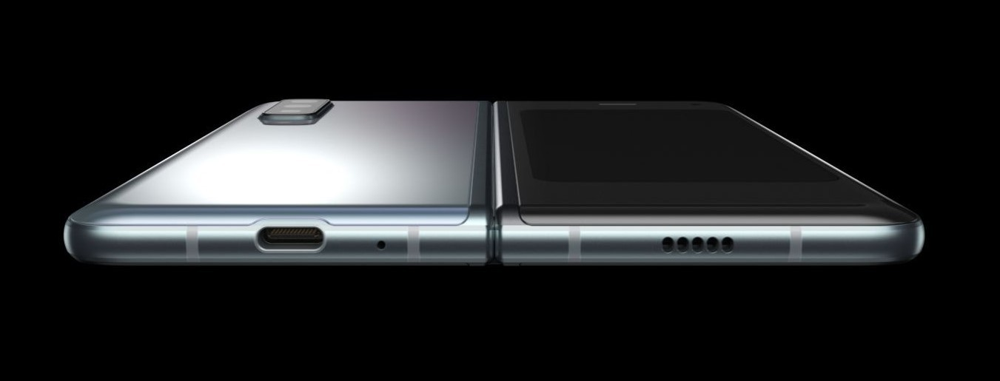

Metro Exodus - компьютерная игра в жанре шутера от первого лица, разработанная украинской компанией 4A Games и изданная Deep Silver. Выход игры состоялся 15 февраля 2019 года для игровых платформ ПК (Windows), PlayStation 4 и Xbox One.
Metro Exodus является третьей игрой в серии Metro, сюжет которой основан на романах Дмитрия Глуховского и продолжает историю Metro 2033 и Metro: Last Light.
Metro Exodus является шутером от первого лица с элементами survival horror и стелс-экшен. Действия проходят на постапокалиптических пустошах территории Российской Федерации и в Республике Казахстан, где игрок должен справляться с новыми опасностями мира и участвовать в борьбе против мутировавших существ, а также враждебно настроенных людей. Игрок владеет арсеналом огнестрельного и метательного оружия, которое может быть улучшено(Из модификаций можно настроить все части оружия. Начиная от ресивера и заканчивая стволом). В игре представлена смесь линейных уровней и открытых локаций, доступных для исследования игроком. Также присутствует динамическая система погоды, цикл дня и ночи и смена сезонов времён года по мере продвижения истории.

Samsung Galaxy Fold - смартфон со складным экраном, созданный компанией Samsung Electronics. Был представлен 21 февраля 2019 года. Планировалось, что продажи в США начнутся 26 апреля 2019 года, но из-за проблем с экраном они были отложены
Прототип Galaxy Fold и его гнущегося экрана был показан вместе с фирменной оболочкой One UI в ноябре 2018 года на конференции Samsung для разработчиков.
В Galaxy Fold установлены два AMOLED-экрана. Первый, 4,6-дюймовый, расположен в центре передней панели и предназначен для использования одной рукой. После раскрытия устройства становится доступна вторая, 7,3-дюймовая матрица с большим вырезом для камер в правом верхнем углу. Сканер отпечатков пальца встроен в кнопку питания. Смартфон имеет 12 ГБ оперативной и 512 ГБ флеш-памяти; используемый процессор точно неизвестен.
Устройство имеет два аккумулятора (по одному в каждой части) с суммарной ёмкостью 4380 мА·ч, а также шесть камер: три основных (12 Мп, 12, Мп, 16 Мп), две на стороне «главного» экрана (10 Мп, 8 Мп) и одну на передней панели (10 Мп).
Galaxy Fold будет продаваться с предустановленной операционной системой Android Pie и оболочкой One UI. В продаже появится вариант устройства с поддержкой сетей 5G. Среди известных особенностей смартфона — работа с тремя приложениями одновременно и возможность моментально вывести на основной экран приложение, открытое в данный момент на передней панели.